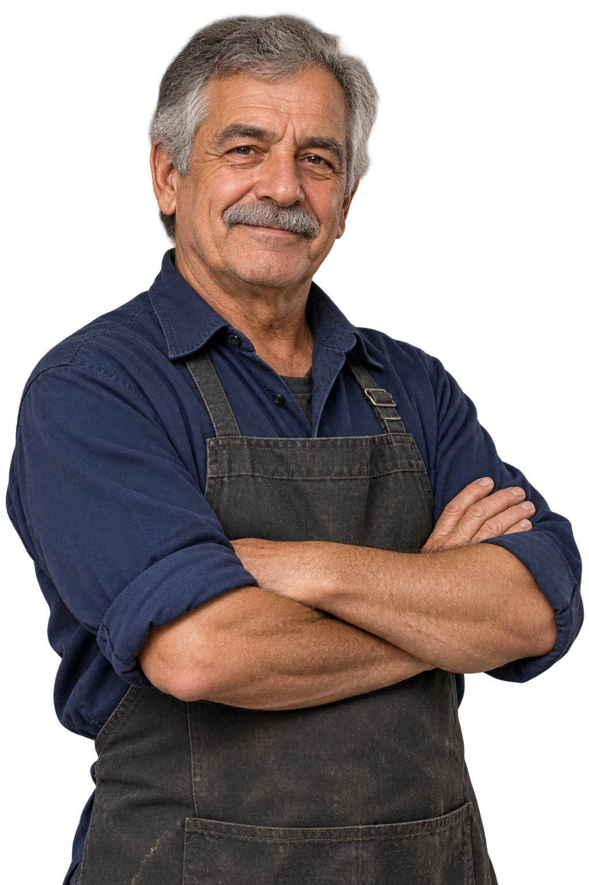

Entendieron lo que necesitábamos y prestaron atención a cada detalle de la muestra.
Ejemplo de opinión de laboratorioSin autor ni empresa atribuidos
PRECISIÓN QUE SE TRABAJA.
Tornería fina, muestras y pequeñas series.
El cuidado que tu proyecto necesita,
en cada milímetro.
El oficio está
en el detalle.
Para ensayar, desarrollar o resolver.
Trabajos pequeños que merecen
toda nuestra atención.
Representaciones ilustrativas de piezas y procesos.
Muestras metálicas para laboratorios y empresas. Cada trabajo empieza por entender qué pieza necesitás y para qué la vas a usar.
Relaciones que se construyen
pieza a pieza, trabajo a trabajo.
Referencias comerciales y denominaciones
pendientes de confirmación.
AÑOS DE OFICIO
La experiencia se nota
en lo que otros no ven.
Hugo Anessi lleva más de cuatro décadas dedicado a la tornería. Un oficio de paciencia, atención y conocimiento del material, que hoy da nombre a este taller.

Detrás de cada pieza,
hay alguien que sabe
mirarla de cerca.
Ejemplos de cómo se verán las opiniones.
No son testimonios reales ni se atribuyen
a las empresas mencionadas.
Entendieron lo que necesitábamos y prestaron atención a cada detalle de la muestra.
Ejemplo de opinión de laboratorioSin autor ni empresa atribuidos
El trato directo y la claridad para conversar sobre la pieza hicieron la diferencia.
Ejemplo de opinión de un clienteSin autor ni empresa atribuidos
Se nota el oficio en la manera de mirar el material y resolver los pequeños detalles.
Ejemplo de opinión de un colaboradorSin autor ni empresa atribuidos
Un plano, una muestra o una idea.
Ese puede ser el comienzo.